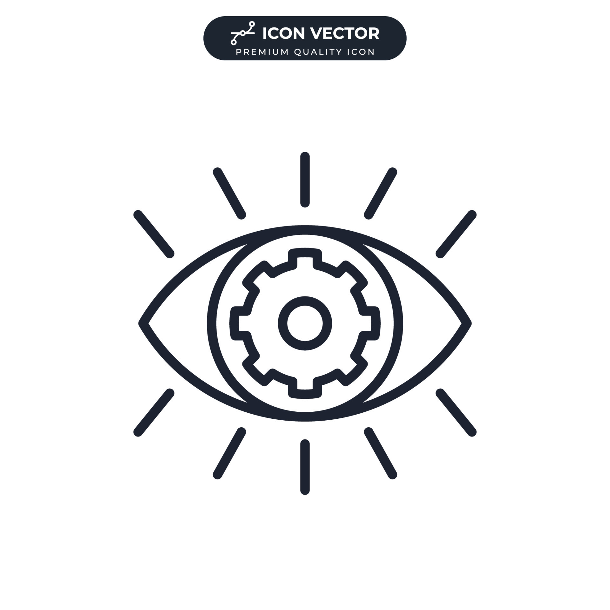

College of Computer Studies

Vision
The College of Computer Studies shall produce Information Technology and Computer Science professionals equipped with knowledge, skills, strong moral valueswell-developed personality, and exceptional abilities, thus becoming the preferred and prestigious source of services and manpower

Mission
The College of Computer Studies shall be the Center of Excellence in Information Technology and Computer Science for providing professional and technological trainingscientific and innovative, and relevant community service

Goals
- Provide competent/quality instruction relevant to time and technology by developing, updating, and evaluating offered programs and curriculum continuously
- Open, maintain and extend on new roads of research and discovery in the field of expertise, in emerging disciplines and in related interdisciplinary areas• Provide
- the faculty members and students with updated educational resources, training and study grants they need to keep pace, sustain, and update with developments in their field.
- Prepare our students in aspects that provide them a strong foundation for sustaining personal and professional development, enable them to build-up strong leadership and become responsible individuals and contributors towards the good of the community.
- Pursue beneficial industry linkages, maintain good relation, extend help and manpower to the country